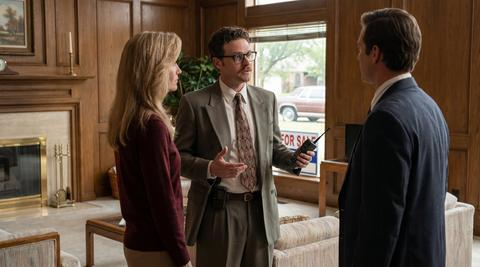

~~ Testimonials ~~>>> WHAT MY CLIENTS HAVE TO SAY <<<
| ||||||||||||
| [ Home ] [ About Colin ] [ Listings ] [ Testimonials ] [ Buyer Tips ] [ Contact ] | ||||||||||||
By The Numbers
Have a Story?I love hearing from past clients! Send me a note and (with your permission) I'll add it to this page. |
Word From My Clients
 The notes and letters below are from real Tulsa families who have trusted me with one of the biggest decisions of their lives. Most of them are also neighbors and friends — that is what happens when you stay in one town, working with one company, for nine years and counting.I keep every card, letter, and Christmas photo on a corkboard in my office. It is the wallpaper that reminds me why I chose this career.
"Colin sold our house in Maple Ridge in four days — for two
thousand dollars over asking. But what I remember most is how calm he was when
the buyer's inspector flagged our furnace. Colin had a recommended HVAC guy at
the house the next morning, got us a real bid, and negotiated a credit that
left everyone happy. The man does not flinch."
— The Henderson Family, Maple Ridge (sold March 1996)
"We were first-time buyers, terrified and probably annoying. Colin walked us
through eleven houses over three months and never once made us feel
rushed. When we finally found 'the one' in Florence Park, he wrote the offer
that night and walked us through every line. We closed two weeks later and
still send him a Christmas card every year."
— Jenna & Marcus Whitaker, Florence Park (closed January 1996)
"My wife passed away in late 1994, and after a year I knew I needed to
downsize. Colin came to the house, sat at my kitchen table for two hours
listening to me, and did not bring up commission once. When we finally
got around to business, he priced the house honestly, sold it in three weeks,
and helped me find a patio home in Yorktown that I love. Class act."
— Bill McEvoy, Patrick Henry → Yorktown (October 1995)
"I have referred Colin to six co-workers at Williams Companies and
every single one of them has thanked me afterward. He treats a $90,000 starter
home with the same focus he gives a $350,000 listing. That is rare."
— Sandra Ruiz-Bowman, Brookside (Williams Companies)
"We were relocating to Tulsa from Kansas City and couldn't fly down for
showings. Colin video-taped seven houses for us — on his own
camcorder — and FedEx-ed the tape so we could watch over the weekend.
We bought the third one on the tape, sight unseen, and it is exactly what we
hoped for."
— Dr. and Mrs. Patel, South Tulsa (relocated June 1995)
"Our previous agent had our house listed for six months with no offers. Colin
took the listing, told us honestly what to fix, helped us stage it, and had
it under contract in nineteen days. The difference was night and day.
We will never use anyone else."
— Tom & Carol Vanderveer, Ranch Acres (April 1996)
"As an attorney I am hard on the people I hire. Colin is the only realtor I
have ever worked with who reads every document carefully, calls when there is
a question, and never tries to push past an issue. We have closed three
transactions together and I would not hesitate to do a fourth."
— Steven L. Korthals, Esq., Brookside (3 closings, 1991-1995)
"Colin coached our son's baseball team three summers ago, and we got to know
him as a neighbor before we ever did business with him. When my mother needed
to sell her place in Sand Springs, he was our first and only call. He treated
my mother with the patience and respect she deserved — the kind of
patience a lot of agents don't have for an 84-year-old seller."
— Donna Atkins-Reeve, Sand Springs (estate sale, 1995)
"I am a builder. I have worked with maybe fifty different realtors over
twenty-plus years. Colin is in the top three. He answers his pager, he shows
up on time, he knows the construction, and his clients are pre-qualified
before he writes the offer. Wish I could clone him."
— Ray Buchholz, Buchholz Custom Homes (Bixby)
"When the deal almost fell apart two days before closing — their
appraisal came in low — Colin renegotiated the price, kept his head, and
got us to the table. We were ready to give up. He wasn't. Forever grateful."
— The Yazzie Family, Owasso (closed February 1996)
|
|||||||||||
|
© 1996 Colin Kline · Coldwell Banker Select · All testimonials posted with client consent. This page was last updated on April 19, 1996 | ||||||||||||